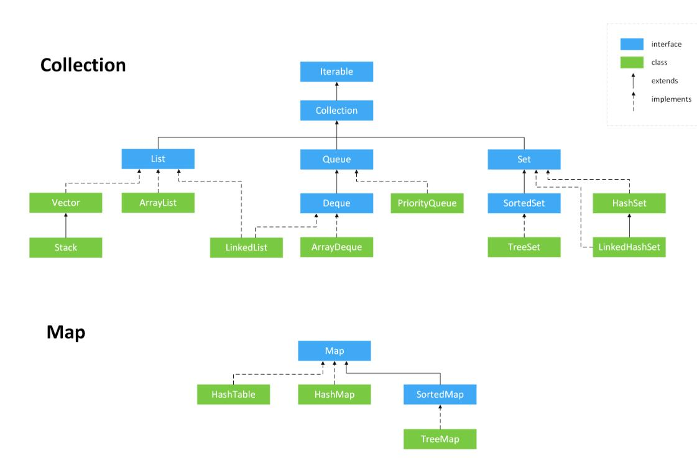
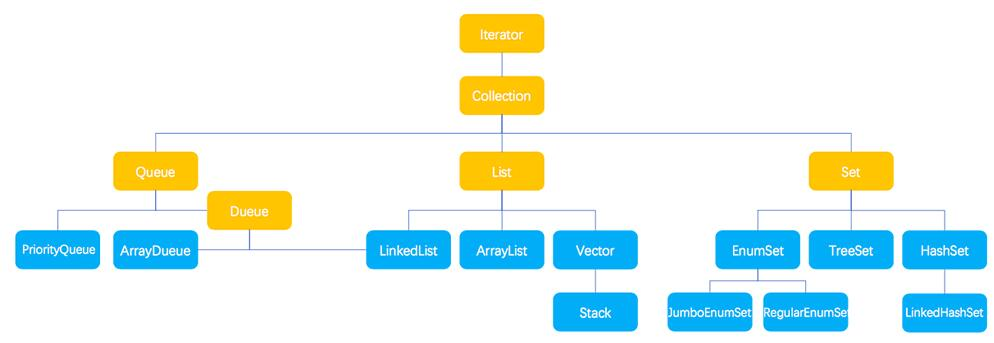

容器
Collection 与 Collections
- java.util.Collection 是一个集合接口，是描述所有序列容器的共性的根接口。它提供了对集合对象进行基本操作的通用接口方法。Collection 接口在 Java 类库中有很多具体的实现。Collection 接口的意义是为各种具体的集合提供了最大化的统一操作方式。如下图所示，基本包含了常用的容器的关系。
- java.util.Collections 是一个包装类。它包含有各种有关集合操作的静态多态方法。此类不能实例化，就像一个工具类，服务于 Java 的 Collection 框架。


Iterable 和 Iterator
持有事物是容器最基本的工作，任何容器类都必须有某种方式可以插入元素并将它们再次取回。对于特定类型的容器都具有 add() 和 get() 方法，但如果我们只是使用容器并不关心容器特定的类型，这种方法就必须为每一种容器都独自编程，这显然不高效。迭代器（也是一种设计模式）的概念可以用于达成此目的（类似于向上转型中的程序设计思想）。迭代器是一个对象，它的工作是遍历并选择序列中的对象，而客户端程序员不必知道或关心该序列底层的结构。Java 中与之相关的接口有两个，分别为 Iterable 和 Iterator。
Java集合类库将集合的接口与实现分离。同样的接口，可以有不同的实现。Java 集合类的基本接口是 Collection 接口。而 Collection 接口必须继承 java.lang.Iterable 接口。以下图表示集合框架的接口，java.lang 以及 java.util 两个包里的。
Collection源码：
1 | public interface Collection<E> extends Iterable<E> { |
Iterable 接口是 Java SE5 引入的接口，它包含一个能够产生 Iterator 的 iterator() 方法，是为了 for-each 循环而设计的接口，所以说它的功能就是为了产生 Iterator 对象。for-each 循环可以与任何实现了 Iterable 接口的对象一起工作。而 java.util.Collection 接口实现了 java.lang.Iterable，故标准类库中的任何集合都可以使用 for-each 循环。
为啥搞这么复杂，直接在集合中继承 Iterator 接口不行吗？
因为 Iterator 接口的核心方法 next() 或者 hasNext() 是依赖于迭代器的当前迭代位置的。如果 Collection 直接实现 Iterator 接口，当集合在不同方法间被传递时，由于当前迭代位置不可预置，那么 next() 方法的结果会变成不可预知。除非再为 Iterator 接口添加一个 reset() 方法，用来重置当前迭代位置。但即使这样，Collection 也只能同时存在一个当前迭代位置。而 Iterable 则不然，每次调用都会返回一个从头开始计数的迭代器，多个迭代器是互不干扰的。
适配器模式增加一种迭代器
如果现有一个 Iterable 类，你想要添加一种或多种在 for-each 语句中使用这个类的方法，应该怎么做呢? 例如，假设你希望可以选择以向前的方向或是向后的方向迭代一个单词列表。如果直接继承这个类，并覆盖 iterator() 方法，你只能替换现有的方法，而不能实现选择。一种解决方案是所谓适配器方法的惯用法，“适配器”部分来自于设计模式，因为你必须提供特定接口以满足 for-each 语句。当你有一个接口并需要另一个接口时，编写适配器就可以解决问题。这里，我希望在默认的前向选代器的基础上，添加产生反向迭代器的能力，因此不能使用覆盖，而是添加了一个能够产生 Iterable 对象的方法，该对象可以用于 for-each 语句，这样我们就可以提供多种使用 for-each 的方式：
1 | class ReversibleArrayList<T> extends ArrayList<T> { |
Comparable 和 Comparator
Comparable、 Comparator 都是用来实现元素的比较、排序的，只是 Comparable 是在集合内部定义的方法实现的排序，Comparator是在集合外部实现的排序。
怎么理解？在这教大家一个速记法，如果英语好的人很容易区分这两者，因为它们的名字已经告诉了我们他们两个最大的区别。
- 后缀
able代表某事物具有什么能力，很显然实现了 Comparable 接口的类自身具有比较大小的能力，假如 A 类实现了 Comparable 接口，那么它必须实现 compareTo 方法，并自身对象 a1 可以直接调用 a1.compareTo(a2) 与另一个对象比较大小。它们的方法的名字也很讲究，这里是 To，也就是跟谁比较，换言之是自己跟别人比较。 - 后缀
tor代表这个事物的属性是一个工具，如果一个类 T 实现了 Comparator 接口，那么它必须实现 compare 方法，那么 T 就是一个比较的工具，只用两个要比较的东西传进来，即 t.compare(a1,a2)，所以这个方法后面没有 To。
终于进入正题了…
List
为 List 添加元素：c.addAll() 和 Collections.addAll()
- 使用 c.addAll()的步骤为：
- 先建一个 Collection 对象 c；
- Arrays.asList() 方法接受一个数组或是一个用逗号分隔的元素列表（使用可变参数），并将其转换为一个 List 对象；
- 最后 c.addAll(Array.asList())。
- 使用 Collections.addAll() 步骤：接收一个 Collection 对象，以及一个数组或是一个用逗号分割的列表，将元素添加到 Collection 中，
Collections.addAll(Collection<? super T> c, T... elements)。
Arrays.asList()
ArrayList() 方法返回的是Arrays的一个内部类 Arrays.ArrayList，它底层是数组而且很多 List 的方法并没有实现，因此不能调整尺寸，即不能用 add() 或 delete() 方法。
List 中的迭代器
- Iterator 只能单向移动
- forEachRemaining(Consumer<? super E> action)：为每个剩余元素执行给定的操作，直到所有的元素都已经被处理或行动将抛出一个异常；
- hasNext()：如果序列中还有元素，则返回true；
- next()：返回序列中的下一个元素；
- remove()：删除迭代器新近返回的元素。
ListIterator 是一个功能更加强大的 Iterator 的子类型，它继承于 Iterator 接口，只能用于各种 List 类型的访问。可以通过调用 listIterator() 方法产生一个指向 List 开始处的 ListIterator, 还可以调用 listIterator(n) 方法创建一个一开始就指向列表索引为 n 的元素处的 ListIterator。
- ListIterator 可以双向移动
- add()：在next()方法返回的元素之前或previous()方法返回的元素之后插入一个元素，插入后光标后移。
- hasNext()：如果序列中正序遍历的方向上还有元素，则返回true；
- hasPrevious()：如果序列中逆序遍历的方向上还有元素，则返回true；
- next()：返回序列中的下一个元素，并将游标后移；
- previous()：返回序列中的上一个元素，并将游标前移；
- nextIndex()：返回序列中的上一个元素的坐标，跟随在next()后；
- previousIndex()：返回序列中的下一个元素的坐标，跟随在previous()后 ；
- remove()：删除由next()或previous()新近返回的元素；
- set()：替换由next()或previous()新近返回的元素。
例如：
1 | public class CrossContainerIteration { |
ArrayList 和 LinkedList
源码
1 | public class ArrayList<E> extends AbstractList<E> |
基本属性
- ArrayList 本质是一个支持扩容的数组，所以它是有序的（物理有序），而 LinkedList 本质是一个双向链表，所以无序；
- LinkedList 实现了实现了 Deque(Double ended queue) 接口，而 Deque 又继承自 Queue，所以可以当做当作普通队列、双向队列（单调队列）、栈使用；
- ArrayList 和 LinkedList 都实现了 Cloneable 接口，即覆盖了函数 clone()，能克隆；
- ArrayList 和 LinkedList 都不是线程安全的。
序列化和反序列化
ArrayList 和 LinkedList 都实现 java.io.Serializable 接口，所以都支持序列化，能通过序列化去传输，但注意它们的主要属性都被 transient 修饰了，那还怎么序列化？原来为了提升序列化的效率它们内部是通过实现 readObject() 和 writeObject() 方法（反射调用）来实现自定义序列化的，具体而言：
- ArrayList 在序列化的时候会调用 writeObject，直接将 size 和 element 写入 ObjectOutputStream；反序列化时调用 readObject，从 ObjectInputStream 获取 size 和 element，再恢复到 elementData。为什么不直接用 elementData 来序列化，而采用上诉的方式来实现序列化呢？原因在于 elementData 是一个缓存数组，它通常会预留一些容量，等容量不足时再扩充容量，那么有些空间可能就没有实际存储元素，采用上诉的方式来实现序列化时，就可以保证只序列化实际存储的那些元素，而不是整个数组，从而节省空间和时间。
- 同理 LinkedList 中也重写了 writeObject 方法，ObjectOutputStream 中将调用 ObjectStreamClass 里的方法通过反射根据方法名称来调用 writeObject 方法，以 LinkedList 中定义的方式来序列化链表中的元素和 size 字段，反序列化时调用 readObject，从 ObjectInputStream 获取 size 和 链表中的元素；
怎么选择？
- 涉及到“栈”、“队列”、“链表”等操作，应该考虑用List，具体的选择哪个List，根据下面的标准来取舍：
- 对于需要快速插入、删除元素，中间插入、删除元素，应该使用 LinkedList；
- 对于需要快速随机访问元素，应该使用 ArrayList；
- 对于“单线程环境” 或者 “多线程环境，但 List 仅仅只会被单个线程操作”，此时应该使用非同步的类(如 ArrayList )；
- 对于“多线程环境，且 List 可能同时被多个线程操作”，此时，应该使用同步的类(Vector类 / Colletions封装 / JUC类)。
线程安全问题
唯有的几个线程安全的集合已经被弃用了，Vector 和 Hashtable 我觉得是因为大量使用 synchronized 加重量级锁导致的性能很差。
Set
Set集合的特点：不能存储相同的元素。典型的实现包括：
- HashSet：为快速查找而设计的Set，存入HashSet的元素必须定义 hashCode()。哈希表是通过使用称为散列法的机制来存储信息的，元素并没有以某种特定顺序来存放；
- LinkedHashSet：具有HashSet的查询速度，且内部使用链表维护元素的数据（插入的次序）。于是在使用迭代器遍历Set时，结果会按元素插入的次序显示。元素也必须定义hashCode()方法；
- TreeSet：保持次序的Set，底层为树结构。使用它可以从set中提取有序的序列。元素必须实现Comparable接口。
该接口主要继承于Collection接口，所以具有Collection的一些常见的方法，但与List不同的是，Set还提供了equals(Object o)和hashCode()，供其子类重写，以实现对集合中插入重复元素的处理。
| No. | Method & Description |
|---|---|
| 1 | add( ) 向集合中添加元素 |
| 2 | clear( ) 去掉集合中所有的元素 |
| 3 | contains( ) 判断集合中是否包含某一个元素 |
| 4 | isEmpty( ) 判断集合是否为空 |
| 5 | iterator( ) 主要用于递归集合，返回一个Iterator()对象 |
| 6 | remove( ) 从集合中去掉特定的对象 |
| 7 | size( ) 返回集合的大小 |
HashSet
HashSet实现Set接口，底层由HashMap来实现，为哈希表结构，新增元素相当于HashMap的key，value默认为一个固定的Object。在我看来，HashSet相当于一个阉割版的HashMap;当有元素插入的时候，会计算元素的hashCode值，将元素插入到哈希表对应的位置中来；它继承于AbstractSet，实现了Set, Cloneable, Serializable接口。
- HashSet继承AbstractSet类，获得了Set接口大部分的实现，减少了实现此接口所需的工作，实际上是又继承了AbstractCollection类；
- HashSet实现了Set接口，获取Set接口的方法，可以自定义具体实现，也可以继承AbstractSet类中的实现；
- HashSet实现Cloneable，得到了clone()方法，可以实现克隆功能；
- HashSet实现Serializable，表示可以被序列化，通过序列化去传输，典型的应用就是hessian协议。
具有如下特点：
- 不允许出现重复因素；
- 允许插入Null值；
- 元素无序（添加顺序和遍历顺序不一致）；
- 线程不安全。
TreeSet
从名字上可以看出，此集合的实现和树结构有关。与HashSet集合类似，TreeSet也是基于Map来实现，具体实现TreeMap，其底层结构为红黑树的排序二叉树来保存Map中的的每个Entry——每个Entry都被当做红黑树的一个节点来对待；；与HashSet不同的是，TreeSet具有排序功能，分为自然排序(123456)和自定义排序两类，默认是自然排序；在程序中，我们可以按照任意顺序将元素插入到集合中，等到遍历时TreeSet会按照一定顺序输出——倒序或者升序；它继承AbstractSet，实现NavigableSet, Cloneable, Serializable接口。
- 与HashSet同理，TreeSet继承AbstractSet类，获得了Set集合基础实现操作；
- TreeSet实现NavigableSet接口，而NavigableSet又扩展了SortedSet接口。这两个接口主要定义了搜索元素的能力，例如给定某个元素，查找该集合中比给定元素大于、小于、等于的元素集合，或者比给定元素大于、小于、等于的元素个数；简单地说，实现NavigableSet接口使得TreeSet具备了元素搜索功能；
- TreeSet实现Cloneable接口，意味着它也可以被克隆；
- TreeSet实现了Serializable接口，可以被序列化，可以使用hessian协议来传输；
具有如下特点：
- 对插入的元素进行排序，是一个有序的集合（主要与HashSet的区别）;
- 底层使用红黑树结构，而不是哈希表结构；
- 允许插入Null值；
- 不允许插入重复元素；
- 线程不安全。
Queue
队列是一个典型的先进先出（FIFO）的容器，一般在队尾插入，在队头删除。队列在并发编程中非常重要，可以安全地将对象从一个任务传输到另一个任务。
- 有界队列：即队列中的元素个数有限制；
- 无界队列：即队列中的元素个数无限制。
Queue 的方法
- 向队列中添加元素
- add()：向有界队列中添加元素的时候，如果元素的数量超过临界值，会抛出异常java.lang.IllegalStateException: Queue full；
- offer()：向有界队列中添加元素的时候，如果元素的数量超过临界值，会添加失败，失败时返回一个特殊值(取决于操作，为null或false)，但不会抛出异常。
- 获取队列中的头部元素并删除
- remove():当队列中没有可获取的元素时，会抛出异常 java.util.NoSuchElementException；
- poll():当队列中没有可获取的元素时，返回一个特殊值(取决于操作，为null或false)。
- 获取队列中的头部元素但不删除
- element():当队列中没有可获取的元素时，会抛出异常java.util.NoSuchElementException；
- peek():当队列中没有可获取的元素时，返回一个特殊值(取决于操作，为null或false)。
Deque (双向队列)
Deque （Double ended queue）接口继承自 Queue 接口，但它新增了很多方法以实现双向队列（单调队列）和栈。Queue 只能在队尾插入，在队头删除（或 peek() 获取），而双端队列队头队尾都能插入删除，主要增加了以下方法，first 代表队头，last 代表队尾：
双向队列（单调队列）
- 添加和删除：
- addFirst（会抛异常）
- addLast（会抛异常）
- offerFirst
- offerLast
- removeFirst（会抛异常）
- removeLast（会抛异常）
- pollFirst
- pollLast
- 获取：
- peekFirst
- peekLast
- getFirst（会抛异常）
- getLast（会抛异常）
栈（栈顶在队头）
- push
- pop
- peek （返回栈顶元素，也就是队头）
PriorityQueue (堆)
先进先出声明的是下一个元素应该是等待时间最长的元素。优先级队列声明下一个弹出元素是最需要的元素(具有最高的优先级)。当在PriorityQueue上调用offer()方法来插入一个对象，要求这个对象一定是可排序的（继承自Comparable方法），这个对象会在队列中被排序。默认的排序将使用对象在队列中的自然顺序，但是你可以通过提供自己的Comparator来修改这个顺序。PriorityQueue可以确保当你调用peek()、poll()和 remove()等方法时，获取的元素将是队列中优先级最高的元素。
1 | class Origin { } |
上例中会抛出异常，因为JDK文档声明:“依赖于自然排序的优先级队列也不允许插入不可比较的对象(这样做可能会导致ClassCastException)。”所以第二次插入将触发异常，所以改成下面这样就好了：
1 | class Origin implements Comparable<Origin>{ |
Map
通过查看Map接口描述，发现Map接口下的集合与Collection接口下的集合，它们存储数据的形式不同。Collection中的集合，元素是孤立存在的（理解为单身），向集合中存储元素采用一个个元素的方式存储。Map中的集合，元素是成对存在的(理解为夫妻)。每个元素由键与值两部分组成，通过键可以找对所对应的值。Collection中的集合称为单列集合，Map中的集合称为双列集合。
需要注意的是，Map中的集合不能包含重复的键，值可以重复；每个键只能对应一个值。
Map中常用的集合为HashMap集合、LinkedHashMap集合。
| 序号 | 方法描述 |
|---|---|
| 1 | void clear( ) 从此映射中移除所有映射关系（可选操作）。 |
| 2 | boolean containsKey(Object k) 如果此映射包含指定键的映射关系，则返回 true。 |
| 3 | boolean containsValue(Object v) 如果此映射将一个或多个键映射到指定值，则返回 true。 |
| 4 | Set entrySet( ) 返回此映射中包含的映射关系的 Set 视图。 |
| 5 | boolean equals(Object obj) 比较指定的对象与此映射是否相等。 |
| 6 | Object get(Object k) 返回指定键所映射的值；如果此映射不包含该键的映射关系，则返回 null。 |
| 7 | int hashCode( ) 返回此映射的哈希码值。 |
| 8 | boolean isEmpty( ) 如果此映射未包含键-值映射关系，则返回 true。 |
| 9 | Set keySet( ) 返回此映射中包含的键的 Set 视图。 |
| 10 | Object put(Object k, Object v) 将指定的值与此映射中的指定键关联（可选操作）。 |
| 11 | void putAll(Map m) 从指定映射中将所有映射关系复制到此映射中（可选操作）。 |
| 12 | Object remove(Object k) 如果存在一个键的映射关系，则将其从此映射中移除（可选操作）。 |
| 13 | int size( ) 返回此映射中的键-值映射关系数。 |
| 14 | Collection values( ) 返回此映射中包含的值的 Collection 视图。 |
hashcode() 和 equals() 的设计
- 原则
- 对象相同（场景定义下），hashcode 一定相同（等价表述：hashcode 不相同，对象一定不相同）；
- hashcode 相同，对象不一定相同。
- 原因
- 因为默认的hashcode方法是根据对象的地址生成的，所以任何一个对象的hash值都是不同的，但在实际的场景中可能出现含有相同意义的多个对象地址不同（hash值），这就导致了我们“不想要的一个key”对应多个value的问题，所以一定要重写hashcode方法；
- 同样因为重写了hashcode方法，所以同一个hashcode位置上可能对应多个对象（甚至包括场景定义下不同含义的对象——即hash冲突），这时就需要调用equals方法判断新来的对象（的key）与已经有的对象(的key)是否相等，因为默认的equals方法也是判断地址是否相同，所以仍然存在前面的问题，即含有相同意义的多个对象地址不同，而导致相同的key有多个value，所以也要重写equals方法，这里是双重检查。可以简单理解为我们要根据业务需求定义自己的相等机制。
- 方案
- 所以在 HashMap 中作为 key 的对象一定要重写 equals 和 hashcode 方法；
- 这样设计不仅可以解决上述问题，而且可以提高效率，在匹配桶位时，先计算hashcode 通过 hashcode 进行散列，相同对象的 hashcode 肯定散列到同一桶位；
- 而且可以防止 hash 冲突，因为可能存在不同对象产生相同 hashcode 的情况，然后再进入链表 or 红黑树通过 equals 方法判断是否存在相同对象，存在则更新，不存在则插入。
- 流程
- 计算对象的hashcode，看在表中是否存在;
- 如果存在则检查对应hashcode位置中的对象和当前对象是否“相等”，“相等”则说明为同一个key，覆盖；不“相等”则添加(key,value)对;
- 如果不存在直接添加(key,value)对。